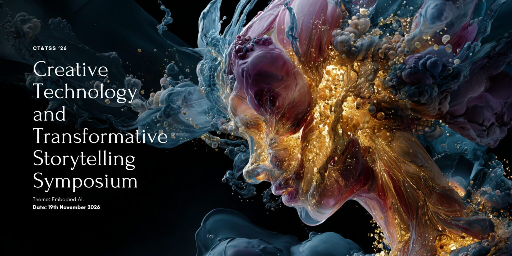

01 / PRESENTATION LIBRARY
The presentations.
Explore the research. View slides in your browser or download the original PowerPoint files.
No presentations match your search.
The archive currently includes one deposited presentation. Further contributions can be added through the repository's data file.